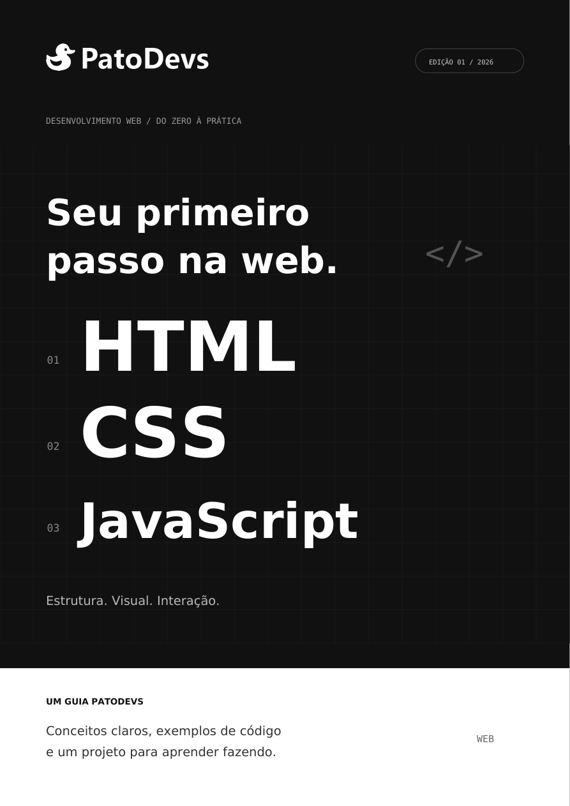
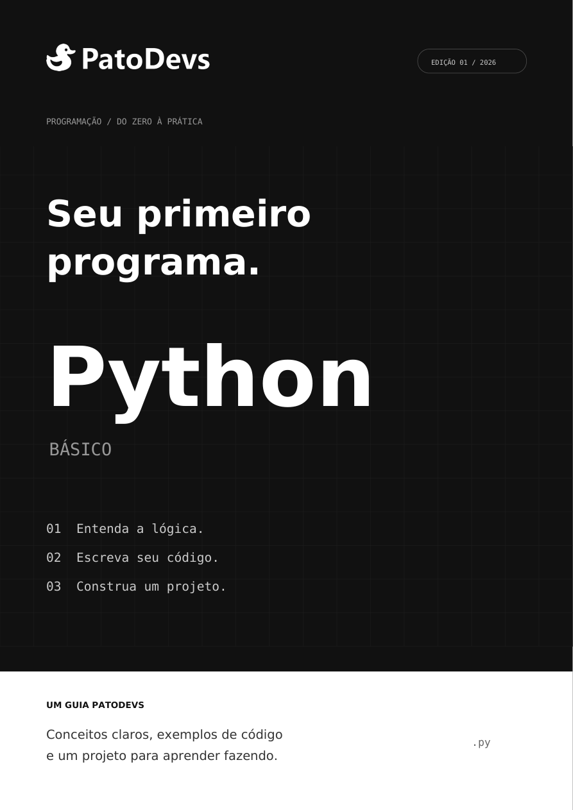

Seu primeiro passo na web
Aprenda HTML, CSS e JavaScript básico com explicações diretas, exemplos de código e exercícios com respostas. No final, coloque os conceitos em prática construindo uma lista de tarefas.
APRENDA COM A PATODEVS
Materiais para entender os conceitos, praticar e construir seus próprios projetos.

Aprenda HTML, CSS e JavaScript básico com explicações diretas, exemplos de código e exercícios com respostas. No final, coloque os conceitos em prática construindo uma lista de tarefas.

Aprenda Python do zero: variáveis, condições, repetições, listas e funções. Pratique com exemplos e exercícios com respostas e construa um organizador de tarefas no terminal.